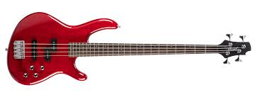

<body bgcolor="black">
    <h1 align="center"><font size="6" color="violet">Bass</font></h1>
    <p>.</p>
<p><font size="5" color="violet">Cello, bass and double bass are all bass instruments.</font></p>
<p>.</p>
<p>.</p>
<p>.</p>


